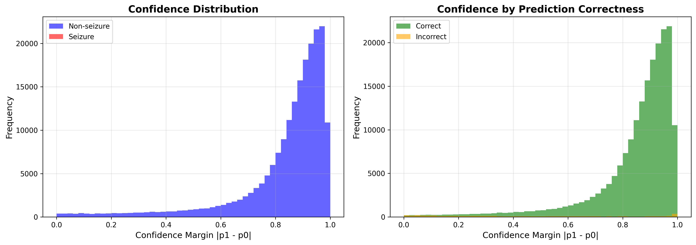
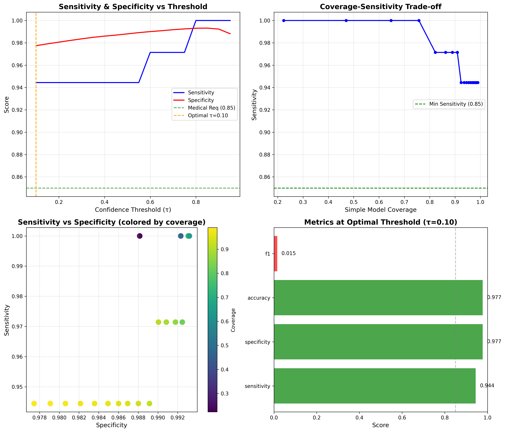
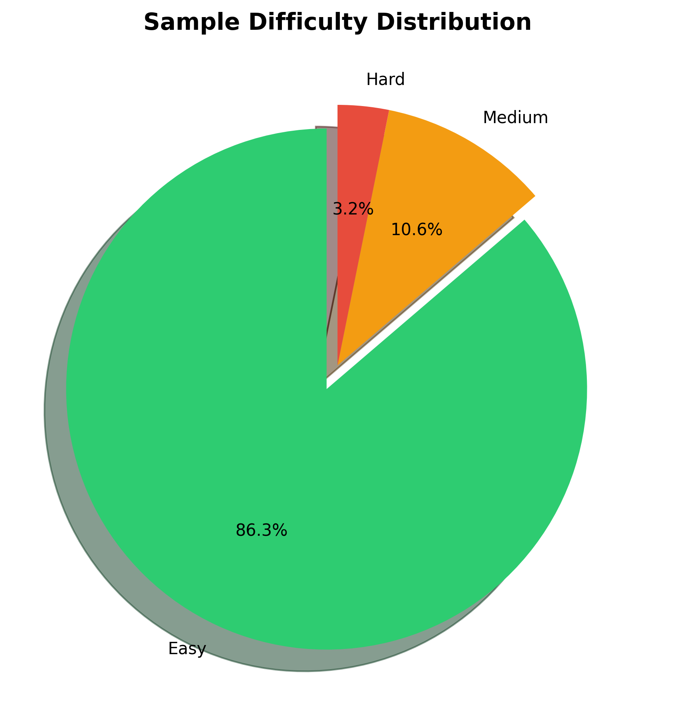
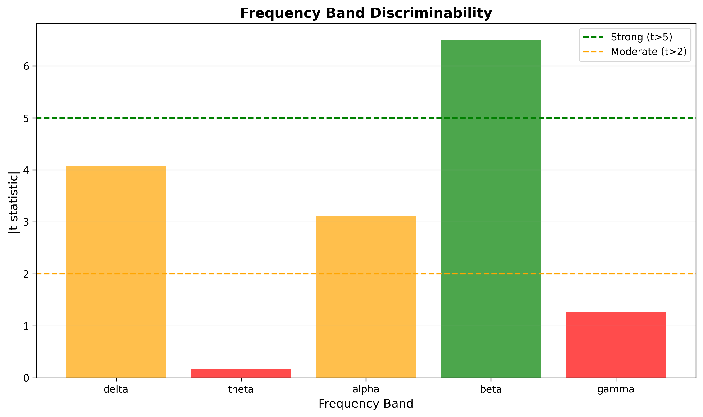

iEEG Data Analysis Report
Analysis Date: 2026-02-06 11:39:46
Experiment Configuration: exp_id=3
Evaluation Metrics: Sensitivity & Specificity
Medical Standard: Sensitivity ≥ 0.85 (to avoid missing seizure detections)
Executive Summary
Current CNN Model Performance
Sensitivity: 0.919
Specificity: 0.973
F1 Score: 0.013
Accuracy: 0.973
Key Findings
- Cascade Feasibility: 86.3% samples with high confidence
- Optimal Threshold: τ = 0.10
- Performance at Threshold: Sensitivity = 0.944,
Specificity = 0.977
- Medical Requirements: ✓ Met
(Sensitivity ≥ 0.85)
- Frequency Features: beta band most discriminative
(t-stat=6.49)
Cascade Architecture Recommendation
Recommendation: Recommend Option B: FFT + MLP - beta band shows strong discriminability
Detailed Analysis
1. Confidence and Cascade Analysis (Core)
Analyze model prediction confidence for different samples to determine the proportion of "easy" samples that can be handled by the simple model.



2. Frequency Feature Analysis
Analyze the discriminability of different EEG frequency bands (delta, theta, alpha, beta, gamma).

Conclusions and Recommendations
Recommendations Based on Analysis Results:
1. Cascade Feasibility Assessment
- High confidence sample ratio: 86.3%
- ✓ Cascade architecture is recommended
2. Simple Model Design Recommendation
- Frequency feature discriminability: beta band t-stat=6.49
- Recommend using FFT+MLP (Option B)
3. Performance Guarantee
- Must ensure simple model achieves sensitivity ≥ 0.85 on easy samples
- Complex model handles hard samples to guarantee overall sensitivity
Generated by analyze_data.py | Environment: remote